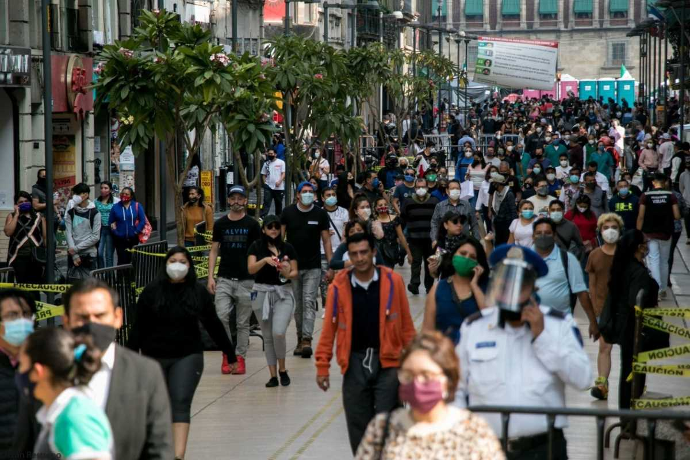
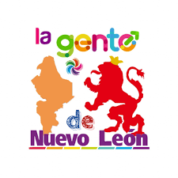

GENTE
La gente de Nuevo León, también conocida como neoloneses o nuevoleonenses, son los habitantes del estado mexicano de Nuevo León. La población total de Nuevo León en 2020 era de 5,784,442 personas. Los municipios con mayor población son Monterrey, Apodaca y Guadalupe.

Informacion general
- Gentilicio: El gentilicio para las personas nacidas en Nuevo León es "nuevoleonés".
- Población: En 2020, la población de Nuevo León era de 5,784,442 habitantes.
- Principales lenguas indígenas: Aunque el español es la lengua oficial, algunas personas hablan lenguas indígenas como náhuatl, huasteco y zapoteco.
- Expectativa de vida: La esperanza de vida en Nuevo León en 2020 fue de 75.9 años, ligeramente superior a la nacional de 75.2 años.
- Artistas: Nuevo León cuenta con artistas destacados en diversas disciplinas como artes plásticas y literatura.
